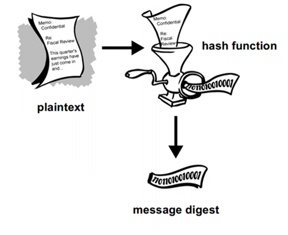

Up until now (almost) all our JavaScript has been in one file.
Obviously, that won't hold as soon as things gets just a little bit more complex
There are many ways to do this. We will let us inspire by the angular-seed
Up until now (almost) all our JavaScript has been in one file.
Obviously, that won't hold as soon as things gets just a little bit more complex
There are many ways to do this. We will let us inspire by the angular-seed
An example Seed (inspiration for ours)
https://github.com/angular/angular-seed
Using Modules
https://auth0.com/blog/2014/01/07/angularjs-authentication-with-cookies-vs-token/
JSON Web Token (JWT) is an open standard (RFC 7519) that defines a compact and self-contained way for securely transmitting information between parties as a JSON object.
This information can be verified and trusted because it is digitally signed.
JWTs can be signed using a secret (with the HMAC algorithm) or a public/private key pair using RSA
Benefits
Before we go into details, lets see a jwt (jot) for real
Observer the three sections (separated by dots) in the jwt
The token is signed, using the secret MEAN
Everyone with access to the Token can read the content (is that a problem)
Tokens does not encrypt your payload
Use TLS to solve this problem
SO how much should I care, what do I need to know to use Security with the seed?
Semester Seed meant for the exercises today:
https://github.com/Lars-m/semesterseedfall2016
The seed ships with Authentication and Authorization almost ready to use, but with a hardcoded in-memory User-list.
Exercise for today is to replace this with a DataBase and NOT store passwords in plain-text Read info on the seeds "Using the Seed" page. It's all on one page

test. InitialSeedRestIntegrationTest → Right click and do ”Test
file”
The seed ships with the necessary dependencies to test With REST-Assured, and provides a demo that shows how to start an in-memory Tomcat Instance for your tests
Testing REST Services that requires Authentication
Run the seed from NetBeans, and open Chrome Developer Tools → Network-tab in the browser
Login (as user_admin) and observe the JSON provided with the request and the JSON returned with the response
Navigate to one of the protected pages, and observe (in the headers) what is being sent (automatically) with the request
Now, open POSTMAN and login (repeating what you observed in step-1)
Use the TOKEN returned to perform a GET request up against a protected Service (using what you observed in step-2
Open the file test. InitialSeedRestIntegrationTest and observe
how the exact same thing is done, using REST-assured
You can use the following annotations to add authorization semantics to your JAX-RS application resources:
@PermitAll
Specifies that all security roles are permitted to access your JAX-RS resources
@DenyAll
Specifies that no security roles are permitted to access your JAX-RS resources
@RolesAllowed
Specifies the security roles that are permitted to access your JAX-RS resources

Why is it such a bad idea to store passwords in plaintext on our backend, assuming our backend is "secure" ??
Can you (always) trust all people with (full) access to the database
Can you (as probably the only company on earth) guarantee that you will never be (or is) hacked
Users (very) often reuse their passwords across different sites. So even if you think it's not a big deal, it could be a very BIG deal for your users
The following will give you a quick introduction to how to solve this problem
A one-way hash function is an algorithm that turns messages or text into a fixed string of digits, called the Cryptographic hash value or the Digest).
One way indicates that it's (almost) impossible to derive the original text given the digest
Watch this Fantastic (6 min only) video, and you will never ever consider storing your passwords in plaintext
Using this link https://crackstation.net/ se how long time it takes to crack the string:
3f21a8490cef2bfb60a9702e9d2ddb7a805c9bd1a263557dfd51a7d0e9dfa93e
After that go to Wikipedia, chose any language (Suomi for example), perform a search and pick a random word, generate the Digest, and see whether it can be “broken”

Read/skim the link below to get the details about one-way hashing and why "salting" is necessary
See Exercise for today